MCP介绍
MCP是什么？
MCP 全称 模型上下文协议（Model Context Protocol），由 Anthropic 在 2024 年 11 月推出，是一个开源通信标准。简单说，它给 AI 装了个“万能转接头” ，让 AI 能跟外部工具、数据、系统无缝对接。可以将 MCP 视为 AI 应用的 USB-C 端口。正如 USB-C 提供了一种将设备连接到各种外围设备和配件的标准化方式一样，MCP 提供了一种将 AI 模型连接到不同数据源和工具的标准化方式。
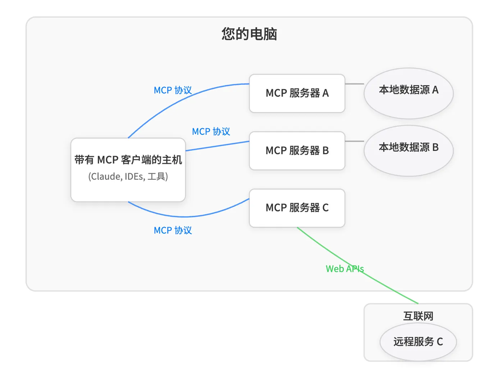
like：
AI应用 ==> 电脑主机
MCP ==> USB 协议
MCP Server ==> 各种 USB 设备（U盘、摄像头、麦克风等）
核心组件：
资源（Resources）： 公开数据（如文件、数据库记录），支持文本和二进制格式。提示（Prompts）： 定义可复用的交互模板，驱动工作流。工具（Tools）： 提供可执行功能（如 API 调用、计算），由模型控制。采样（Sampling）： 服务器通过客户端请求 LLM 推理，保持安全隔离。根（Roots）： 定义服务器操作范围（如文件路径、API 端点）。
传输机制：
标准输入输出 (stdio)： 使用标准输入/输出进行通信，适用于本地进程服务器发送事件 (SSE)： 使用 Server-Sent Events（服务器推送事件）进行服务器到客户端的消息传递，使用 HTTP POST 进行客户端到服务器的消息传递
想深入了解？看 官方介绍 。
MCP能干什么？
MCP 能让 AI 从“嘴炮王”变成“实干家”，以下是几个例子：
连工具：用 GitHub 管理代码、用 12306 订票查票、用 高德地图 导航、用 快应用编程助手 创建快应用。
查数据：直接看你电脑文件、数据库记录，甚至网上实时信息。
干复杂活儿：写网页时，AI 能查代码、生成图片、调试页面，一条龙搞定。
人机协作：AI 干一半问你意见，你点头它再继续。
示例：
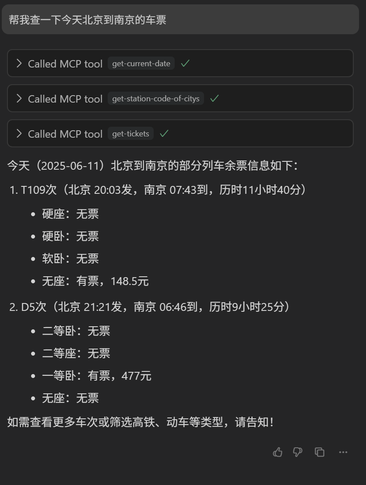
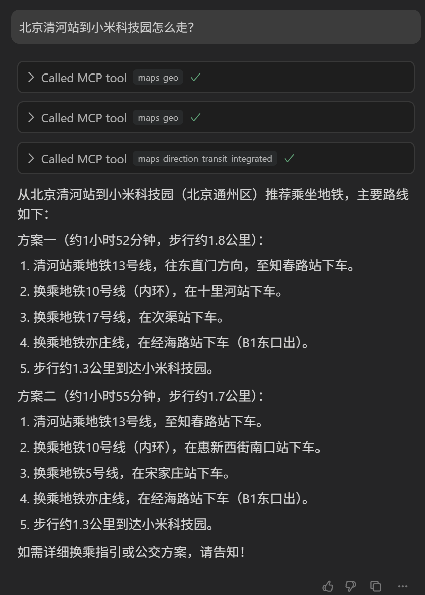
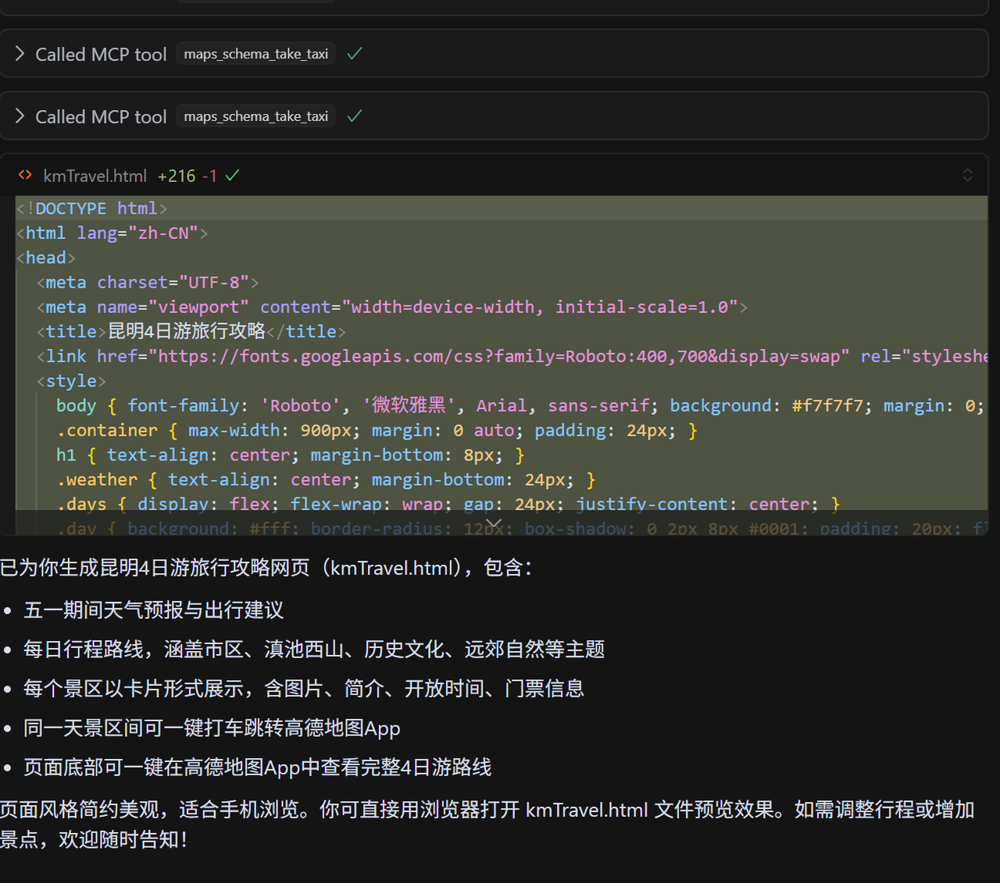
如何使用MCP？
选择 / 构建 支持 MCP 的客户端
MCP 客户端是 AI 的“操作台”：
现有客户端： 例如，Claude 客户端、支持 MCP 的 IDE（如 Cursor、Windsurf）、VS Code 插件（如 Cline、Continue）等。
自定义客户端： 如果您希望根据特定需求构建自己的客户端，可以使用 MCP 提供的 SDK（如 Python、Node.js、Java 等）进行开发。
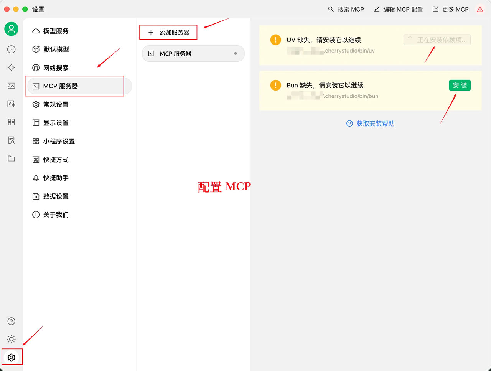
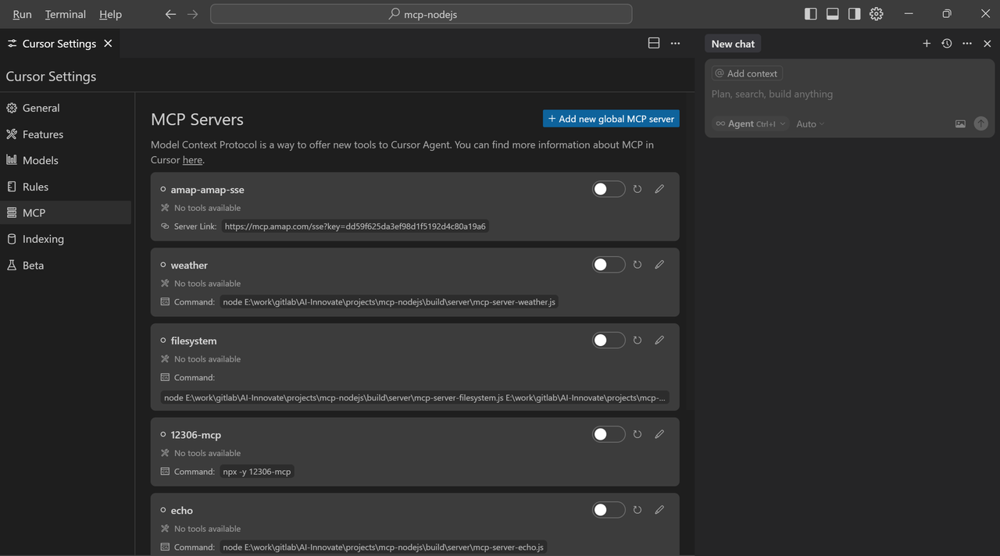
获取MCP Server
配置使用 MCP 服务
示例：
1 2 3 4 5 6 7 8 9 10 11 12 13 14 15 16 { "mcpServers" : { "filesystem" : { "command" : "npx" , "args" : [ "-y" , "@modelcontextprotocol/server-filesystem" , "..." ] } , "brave-search" : { "command" : "npx" , "args" : [ "-y" , "@modelcontextprotocol/server-brave-search" ] , "env" : { "BRAVE_API_KEY" : "your_api_key" } } } }
具体的使用方法可以参考教程：Cursor使用教程 ，For Claude Desktop Users
MCP 在需要与多种外部资源和工具交互的应用场景中具有显著优势。 具体体现在：
生态： MCP 提供很多现成的插件，你的 AI 可以直接使用。统一性： 不限制于特定的 AI 模型，任何支持 MCP 的模型都可以灵活切换。数据安全： 你的敏感数据留在自己的电脑上，不必全部上传。（因为我们可以自行设计接口确定传输哪些数据）
从0开始实现MCP Server
MCP生态正在快速发展，越来越多企业和开发者加入MCP标准，使AI能力边界不断扩展。MCP Server 是你构建智能体最重要的“外挂工具”集合，让大模型也能拥有连工具、查数据、干复杂活儿的能力，比如：生成快应用代码、地图导航等等。
什么是MCP Server？
MCP Server 是一个中间层服务器，它主要负责处理和管理 AI 模型的上下文信息，确保模型能够高效且准确地理解和响应用户请求。MCP Server可以提供三种主要类型的功能：
资源： 客户端可以读取的类似文件的数据（如 API 响应或文件内容）
1 2 3 4 5 6 7 8 9 10 11 12 13 14 15 16 17 18 19 20 21 22 23 server.resource ( "config" , "config://app" , async (uri) => ({ contents : [{ uri : uri.href , text : "App configuration here" }] }) ); server.resource ( "user-profile" , new ResourceTemplate ("users://{userId}/profile" , { list : undefined }), async (uri, { userId }) => ({ contents : [{ uri : uri.href , text : `Profile data for user ${userId} ` }] }) );
工具： LLM 可调用的函数（一般需用户批准）
1 2 3 4 5 6 7 8 9 10 11 12 13 14 15 16 17 18 19 20 21 22 23 24 25 26 27 server.tool ( "calculate-bmi" , { weightKg : z.number (), heightM : z.number () }, async ({ weightKg, heightM }) => ({ content : [{ type : "text" , text : String (weightKg / (heightM * heightM)) }] }) ); server.tool ( "fetch-weather" , { city : z.string () }, async ({ city }) => { const response = await fetch (`https://api.weather.com/${city} ` ); const data = await response.text (); return { content : [{ type : "text" , text : data }] }; } );
提示： 帮助用户完成特定任务的预写模板
1 2 3 4 5 6 7 8 9 10 11 12 13 server.prompt ( "review-code" , { code : z.string () }, ({ code } ) => ({ messages : [{ role : "user" , content : { type : "text" , text : `Please review this code:\n\n${code} ` } }] }) );
MCP Server与Client如何通信？
MCP Server需要连接到传输协议才能与MCP Client通信。服务器的启动方式取决于所选择的传输协议。
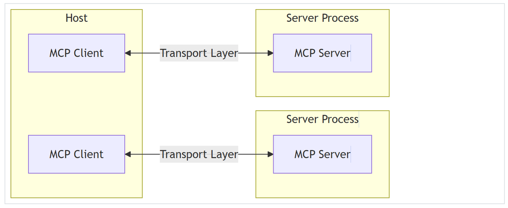
消息格式 MCP 使用 JSON-RPC 2.0MCP 协议消息转换为 JSON-RPC 格式进行传输，并将接收到的 JSON-RPC 消息转换回MCP 协议消息。
请求（Requests）
1 2 3 4 5 6 { jsonrpc: "2.0" , id: number | string, method: string, params?: object }
响应（Results）
1 2 3 4 5 6 7 8 9 10 { jsonrpc: "2.0" , id: number | string, result?: object, error?: { code: number, message: string, data?: unknown } }
通知（Notifications）
1 2 3 4 5 { jsonrpc: "2.0" , method: string, params?: object }
示例： 客户端通过resources/list端口请求资源列表，服务器返回可用资源：
1 2 3 4 5 6 7 8 9 10 11 12 13 14 { "jsonrpc" : "2.0" , "id" : 1 , "method" : "resources/list" , "params" : { } } { "jsonrpc" : "2.0" , "id" : 1 , "result" : [ { "uri" : "file:///logs/app.log" , "name" : "应用日志" } ] }
实现传输层 MCP 协议支持多种传输机制，包括 stdio、Server-Sent Events（SSE） 。传输均采用JSON-RPC 2.0
传输方式
标准输入输出 (stdio)
服务器发送事件 (SSE)
工作方式
客户端和服务器通过标准输入输出流（stdin/stdout）通信
客户端发送命令和数据，服务器执行后通过标准输出返回结果
客户端通过 HTTP GET 请求与服务器建立连接
服务端通过 HTTP POST 请求与客户端实现流式通信
应用场景
构建命令行工具
实现本地集成
需要简单的进程通信
使用 shell 脚本
服务器主动推送数据
实时聊天
天气预报
新闻更新等实时数据场景
TypeScript (Server) 实现
import { McpServer } from "@modelcontextprotocol/sdk/server/mcp.js";
import { StdioServerTransport } from "@modelcontextprotocol/sdk/server/stdio.js";
const server = new McpServer({
import express from “express”;
const server = new McpServer({
app.get(“/sse”, async (req, res) => {
app.post(“/messages”, async (req, res) => {
app.listen(3001);
TypeScript (Client) 实现 import { Client } from “@modelcontextprotocol/sdk/client/index.js”;
const client = new Client({
import { Client } from “@modelcontextprotocol/sdk/client/index.js”;
const client = new Client({http://localhost:3000/sse ”)
案例实现
许多 LLM（包括 Claude）目前无法获取天气预报和恶劣天气警报，而MCP就可以很好地解决这个问题。这里我们构建一个MCP Server，该服务器暴露两个工具：get-alerts 和 get-forecast。然后，我们将服务器连接到 MCP 主机（如Cursor）：
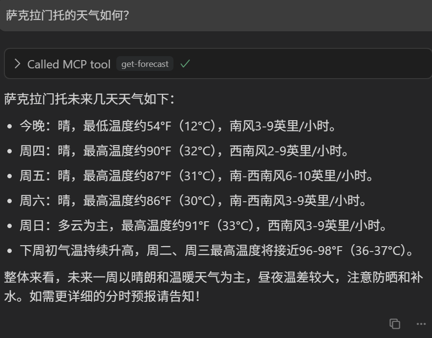
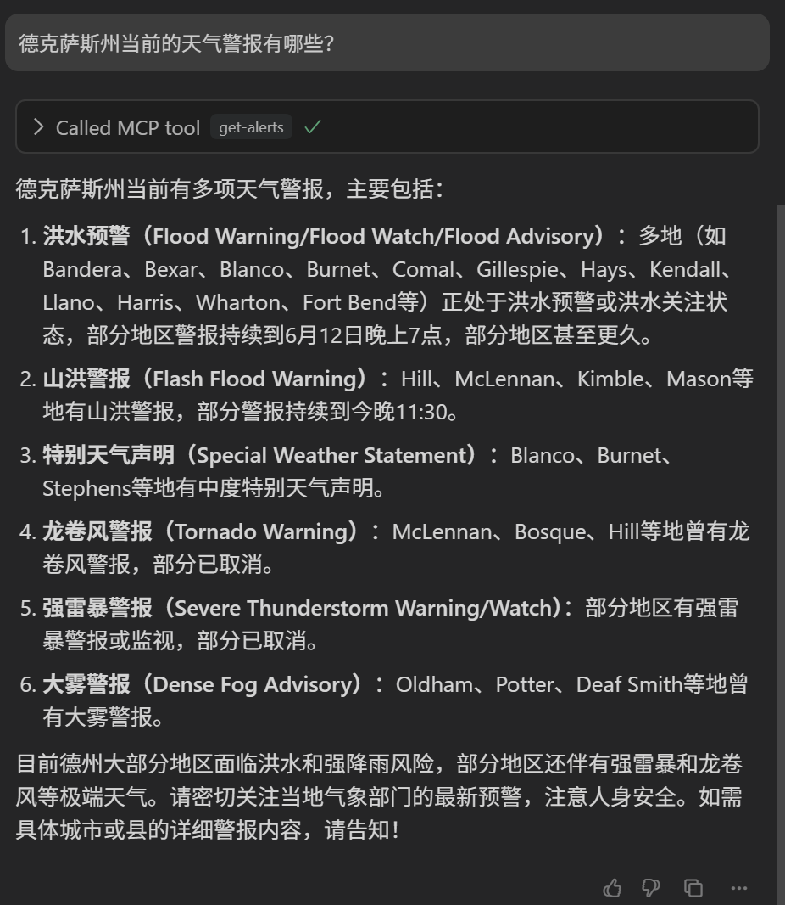
服务器可以连接到任何客户端，这里我们选择了 Cursor进行演示，后续大家也可以自己搭建MCP Client连接使用这个MCP Server！
👇👇👇具体实现流程 👇👇👇
配置环境 package.json，添加 type: "module" 和一个构建脚本：
1 2 3 4 5 6 7 8 9 { "type" : "module" , "bin" : { "weather" : "./build/index.js" }, "scripts" : { "build" : "tsc && chmod 755 build/index.js" }, "files" : [ "build" ], }
在您的项目根目录下创建一个 tsconfig.json：
1 2 3 4 5 6 7 8 9 10 11 12 13 14 { "compilerOptions" : { "target" : "ES2022" , "module" : "Node16" , "moduleResolution" : "Node16" , "outDir" : "./build" , "rootDir" : "./src" , "strict" : true , "esModuleInterop" : true , "skipLibCheck" : true , "forceConsistentCasingInFileNames" : true }, "include" : ["src/**/*" ], "exclude" : ["node_modules" ] }
接下来就可以开始构建服务器代码了！
导入MCP SDK并创建MCP Server实例 MCP SDK（TypeScript），创建一个名为weather的MCP Server
1 2 3 4 5 6 7 8 9 10 11 12 import { McpServer } from "@modelcontextprotocol/sdk/server/mcp.js" ;import { StdioServerTransport } from "@modelcontextprotocol/sdk/server/stdio.js" ;import { z } from "zod" ;const NWS_API_BASE = "https://api.weather.gov" ;const USER_AGENT = "weather-app/1.0" ;const server = new McpServer ({ name : "weather" , version : "1.0.0" , });
实现功能逻辑
1 2 3 4 5 6 7 8 9 10 11 12 13 14 15 16 17 18 19 20 21 22 23 24 25 26 27 28 29 30 31 32 33 34 35 36 37 38 39 40 41 42 43 44 45 46 47 48 49 50 51 52 53 54 55 56 57 58 59 60 61 62 63 64 65 66 async function makeNWSRequest<T>(url : string ): Promise <T | null > { const headers = { "User-Agent" : USER_AGENT , Accept : "application/geo+json" , }; try { const response = await fetch (url, { headers }); if (!response.ok ) { throw new Error (`HTTP error! status: ${response.status} ` ); } return (await response.json ()) as T; } catch (error) { console .error ("Error making NWS request:" , error); return null ; } } interface AlertFeature { properties : { event ?: string ; areaDesc ?: string ; severity ?: string ; status ?: string ; headline ?: string ; }; } function formatAlert (feature : AlertFeature string { const props = feature.properties ; return [ `Event: ${props.event || "Unknown" } ` , `Area: ${props.areaDesc || "Unknown" } ` , `Severity: ${props.severity || "Unknown" } ` , `Status: ${props.status || "Unknown" } ` , `Headline: ${props.headline || "No headline" } ` , "---" , ].join ("\n" ); } interface ForecastPeriod { name ?: string ; temperature ?: number ; temperatureUnit ?: string ; windSpeed ?: string ; windDirection ?: string ; shortForecast ?: string ; } interface AlertsResponse { features : AlertFeature []; } interface PointsResponse { properties : { forecast ?: string ; }; } interface ForecastResponse { properties : { periods : ForecastPeriod []; }; }
将具体功能注册MCP Tool server.tool：get-alerts与get-forecast，负责获取天气预报和恶劣天气警报功能。
1 2 3 4 5 6 7 8 9 10 11 12 13 14 15 16 17 18 19 20 21 22 23 24 25 26 27 28 29 30 31 32 33 34 35 36 37 38 39 40 41 42 43 44 45 46 47 48 49 50 51 52 53 54 55 56 57 58 59 60 61 62 63 64 65 66 67 68 69 70 71 72 73 74 75 76 77 78 79 80 81 82 83 84 85 86 87 88 89 90 91 92 93 94 95 96 97 98 99 100 101 102 103 104 105 106 107 108 109 110 111 112 113 114 115 116 117 118 119 120 121 122 123 124 125 126 127 128 129 130 131 server.tool ( "get-alerts" , "Get weather alerts for a state" , { state : z.string ().length (2 ).describe ("Two-letter state code (e.g. CA, NY)" ), }, async ({ state }) => { const stateCode = state.toUpperCase (); const alertsUrl = `${NWS_API_BASE} /alerts?area=${stateCode} ` ; const alertsData = await makeNWSRequest<AlertsResponse >(alertsUrl); if (!alertsData) { return { content : [ { type : "text" , text : "Failed to retrieve alerts data" , }, ], }; } const features = alertsData.features || []; if (features.length === 0 ) { return { content : [ { type : "text" , text : `No active alerts for ${stateCode} ` , }, ], }; } const formattedAlerts = features.map (formatAlert); const alertsText = `Active alerts for ${stateCode} :\n\n${formattedAlerts.join("\n" )} ` ; return { content : [ { type : "text" , text : alertsText, }, ], }; }, ); server.tool ( "get-forecast" , "Get weather forecast for a location" , { latitude : z.number ().min (-90 ).max (90 ).describe ("Latitude of the location" ), longitude : z.number ().min (-180 ).max (180 ).describe ("Longitude of the location" ), }, async ({ latitude, longitude }) => { const pointsUrl = `${NWS_API_BASE} /points/${latitude.toFixed(4 )} ,${longitude.toFixed(4 )} ` ; const pointsData = await makeNWSRequest<PointsResponse >(pointsUrl); if (!pointsData) { return { content : [ { type : "text" , text : `Failed to retrieve grid point data for coordinates: ${latitude} , ${longitude} . This location may not be supported by the NWS API (only US locations are supported).` , }, ], }; } const forecastUrl = pointsData.properties ?.forecast ; if (!forecastUrl) { return { content : [ { type : "text" , text : "Failed to get forecast URL from grid point data" , }, ], }; } const forecastData = await makeNWSRequest<ForecastResponse >(forecastUrl); if (!forecastData) { return { content : [ { type : "text" , text : "Failed to retrieve forecast data" , }, ], }; } const periods = forecastData.properties ?.periods || []; if (periods.length === 0 ) { return { content : [ { type : "text" , text : "No forecast periods available" , }, ], }; } const formattedForecast = periods.map ((period : ForecastPeriod [ `${period.name || "Unknown" } :` , `Temperature: ${period.temperature || "Unknown" } °${period.temperatureUnit || "F" } ` , `Wind: ${period.windSpeed || "Unknown" } ${period.windDirection || "" } ` , `${period.shortForecast || "No forecast available" } ` , "---" , ].join ("\n" ), ); const forecastText = `Forecast for ${latitude} , ${longitude} :\n\n${formattedForecast.join("\n" )} ` ; return { content : [ { type : "text" , text : forecastText, }, ], }; }, );
运行服务器
1 2 3 4 5 6 7 8 9 async function main (const transport = new StdioServerTransport (); await server.connect (transport); console .error ("Weather MCP Server running on stdio" ); } main ().catch ((error ) => { console .error ("Fatal error in main():" , error); process.exit (1 ); });
weather这个MCP Server就实现完成了，运行 npm run build 来构建您的服务器！
调试MCP Server Cursor调试weather这个MCP Server。要在 Cursor 中添加 MCP 服务器，选择 Cursor 设置 -> 功能 ->MCP 并点击 添加新 MCP 服务器 按钮。
使用Cusor验证MCP服务器详细教程可参考：在Cursor中添加MCP服务器 https://mcp.fleeto.us/docs/tools/debugging/
在mcp.json文件中添加weather服务器的配置内容：
1 2 3 4 5 6 7 8 9 10 { "mcpServers" : { "weather" : { "command" : "node" , "args" : [ "E:\\work\\mcp-nodejs\\build\\server\\mcp-server-weather.js" ] } } }
设置完成后，可以发现Cursor可以成功加载我们自己写的weather MCP。
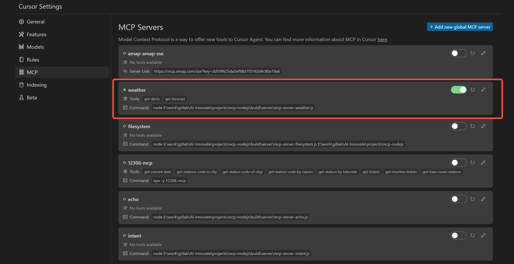
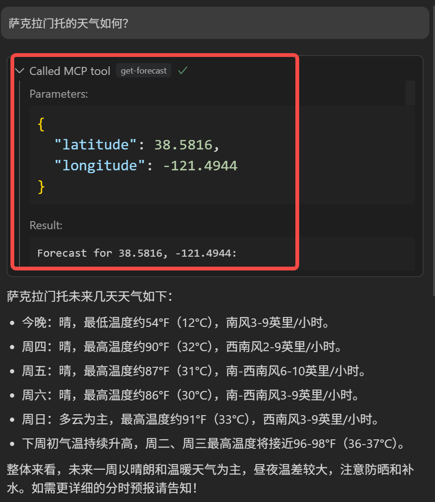
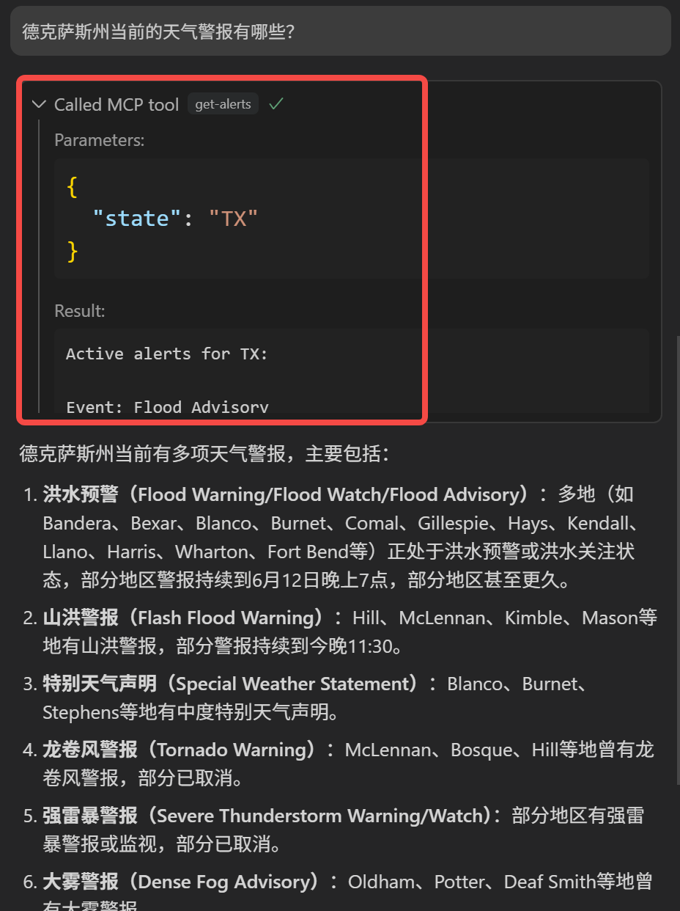
可以看到，我们自己编写的MCP Server可以成功被Cursor调用！stdio方式的通信协议，该方式本质上就是在本地允许了一个服务，然后通过MCP Client去调用本地的服务实现的。
大家快动手将自己的业务需求实现为MCP Server吧！
从0开始搭建MCP Client
什么是MCP Client？
MCP-Client作为 AI 的“操作台”，是连接AI模型（如Claude、GPT等大型语言模型）与外部数据源、工具和Server的桥梁。MCP Client与MCP Server调用流程如下：
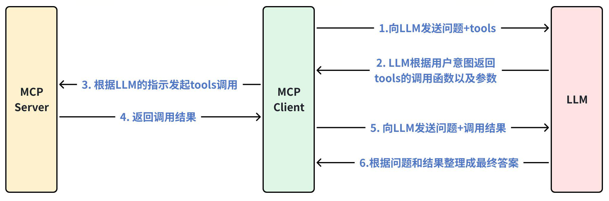
为什么要自己写MCP Client？
目前，流行的MCP Client包括Claude 客户端、支持 MCP 的 IDE（如 Cursor、Windsurf）、VS Code 插件（如 Cline、Continue）等。
需要整合本地系统或私有服务
示例：公司内部有一个内网报表系统，无法对外开放API。通过自建 MCP Client，可将报表生成功能注册成 tool，支持在智能体中用自然语言直接调用。
对权限控制与安全性有更高要求
示例：处理金融、医疗、政务等敏感数据，需对每次 tool 调用进行身份校验与操作审计。
业务逻辑复杂，需要定制化控制
示例：客服机器人需完成“工单创建 → 审核 → 分派 → 通知”多步骤流程，需在 MCP Client 中实现状态流转逻辑。
需支持私有部署或离线运行
示例：部署在政府机关内网，无法访问外网，必须完全本地化运行智能体与工具。
需要增强调试、监控与可观测性
示例：在工具异常频繁时，通过自定义日志与监控快速定位是哪一步出现异常参数或超时。
协议扩展与兼容性适配需求
示例：某工业控制系统只支持特定二进制协议，通过 MCP Client 适配器将自然语言请求转换成底层控制指令。
总结： 当你的场景需要整合内外系统、强化安全控制、承载复杂流程、支持私有化部署或扩展协议能力时，自建 MCP Client 是更具性价比的选择！
案例实现
这里，我们构建了一个MCP Client，并能够与所有 MCP Server进行集成。一个由 MCP 服务器驱动的聊天机器人客户端，交互效果如下：
👇👇👇具体实现流程 👇👇👇
准备模型
准备一个适配openai协议的大模型API，例如：deepseek V3，Qwen系列，Moonshot月之暗面等等。MCP Client，首先在工程中创建环境变量.env文件，在该文件中我们放入自己的大模型相关信息，主要包含3个字段：
API_KEY：大模型的API KEY
BASE_URL：大模型请求地址
MODEL：模型名称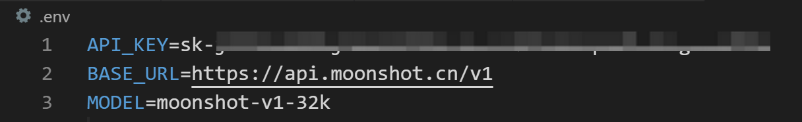
MCP-Prompt
目前支持或深度集成MCP协议的大模型，主要包括：Claude系列 和 GPT系列 等。MCP协议基本上没有做针对性的集成训练，所以在国内使用MCP协议，建议编写结构化的MCP-Prompt，通过system prompt的方式让国内的大模型适配MCP协议。cloudflare对大模型进行代理，然后对Cursor的MCP请求进行截获并将MCP提示词相关内容保留，其他无关内容删除，得到以下提示词，当然大家也可以自行对这个提示词进行修改，实现自己的定制化。MCP_Prompt.txt，文件中预留<$MCP_INFO$>占位符，之后将MCP Server的tool信息填充到此处：
1 2 3 4 5 6 7 8 9 10 11 12 13 14 15 16 17 18 19 20 21 22 23 24 25 26 27 28 29 30 31 32 33 34 35 36 37 38 39 40 41 42 43 44 45 46 47 48 49 50 51 52 53 54 55 56 57 58 59 60 61 62 63 64 65 66 67 68 69 70 71 72 73 74 75 76 77 78 79 80 81 82 83 84 85 86 87 88 89 90 91 92 93 94 95 96 97 98 99 100 101 102 103 104 105 106 107 You are an AI assistant, you can help users solve problems, including but not limited to programming, editing files, browsing websites, etc. ==== TOOL USE You have access to a set of tools that are executed upon the user's approval. You can use one tool per message, and will receive the result of that tool use in the user's response. You use tools step-by-step to accomplish a given task, with each tool use informed by the result of the previous tool use. # Tool Use Formatting Tool use is formatted using XML-style tags. The tool name is enclosed in opening and closing tags, and each parameter is similarly enclosed within its own set of tags. Here's the structure: <tool_name > <parameter1_name > value1</parameter1_name > <parameter2_name > value2</parameter2_name > ... </tool_name > For example: <read_file > <path > src/main.js</path > </read_file > Always adhere to this format for the tool use to ensure proper parsing and execution. # Tools ## use_mcp_tool Description: Request to use a tool provided by a connected MCP server. Each MCP server can provide multiple tools with different capabilities. Tools have defined input schemas that specify required and optional parameters. Parameters: - server_name: (required) The name of the MCP server providing the tool - tool_name: (required) The name of the tool to execute - arguments: (required) A JSON object containing the tool's input parameters, following the tool's input schema Usage: <use_mcp_tool > <server_name > server name here</server_name > <tool_name > tool name here</tool_name > <arguments > { "param1": "value1", "param2": "value2" } </arguments > </use_mcp_tool > # Tool Use Examples ## Example 1: Requesting to use an MCP tool <use_mcp_tool > <server_name > weather-server</server_name > <tool_name > get_forecast</tool_name > <arguments > { "city": "San Francisco", "days": 5 } </arguments > </use_mcp_tool > ## Example 2: Another example of using an MCP tool (where the server name is a unique identifier such as a URL) <use_mcp_tool > <server_name > github.com/modelcontextprotocol/servers/tree/main/src/github</server_name > <tool_name > create_issue</tool_name > <arguments > { "owner": "octocat", "repo": "hello-world", "title": "Found a bug", "body": "I'm having a problem with this.", "labels": ["bug", "help wanted"], "assignees": ["octocat"] } </arguments > </use_mcp_tool > === MCP SERVERS The Model Context Protocol (MCP) enables communication between the system and locally running MCP servers that provide additional tools and resources to extend your capabilities. # Connected MCP Servers When a server is connected, you can use the server's tools via the `use_mcp_tool` tool, and access the server's resources via the `access_mcp_resource` tool. <$MCP_INFO$> === CAPABILITIES - You have access to MCP servers that may provide additional tools and resources. Each server may provide different capabilities that you can use to accomplish tasks more effectively. ==== RULES - MCP operations should be used one at a time, similar to other tool usage. Wait for confirmation of success before proceeding with additional operations. ==== OBJECTIVE You accomplish a given task iteratively, breaking it down into clear steps and working through them methodically. 1. Analyze the user's task and set clear, achievable goals to accomplish it. Prioritize these goals in a logical order. 2. Work through these goals sequentially, utilizing available tools one at a time as necessary. Each goal should correspond to a distinct step in your problem-solving process. You will be informed on the work completed and what's remaining as you go. 3. Once you've completed the user's task, you must use the attempt_completion tool to present the result of the task to the user. 4. The user may provide feedback, which you can use to make improvements and try again. But DO NOT continue in pointless back and forth conversations, i.e. don't end your responses with questions or offers for further assistance."
引入MCP配置文件
一个客户端通常可以连接多个MCP服务，用过Cursor或其他MCP Client应用的同学应该很清楚，他们是通过一个JSON配置文件去加载多个MCP Server，我们也可以在客户端配置一个mcp.json文件去完成多个服务的配置和加载。
这里可以配置上一节中自己实现的weather MCP服务器（mcp-server-weather.ts）
mcp.json示例：
1 2 3 4 5 6 7 8 9 10 11 12 13 14 15 16 17 18 19 20 21 { "mcpServers" : { "weather" : { "isActive" : true , "type" : "stdio" , "name" : "weather" , "command" : "node" , "args" : [ "E:\\work\\mcp-nodejs\\build\\server\\mcp-server-weather.js" ] } , "amap-amap-sse" : { "isActive" : true , "type" : "sse" , "name" : "amap-amap-sse" , "url" : "https://mcp.amap.com/sse?key={高德API KEY}" } } }
字段意义如下所示：
公共字段：
isActive：用于控制该MCP Server是否被激活。type：MCP Server的类型，取值为stdio或ssename：MCP Server别名。
stdio相关字段：
command：命令名称。args：参数列表env：环境变量字典
sse相关参数：
实现通信协议
MCP Client需要连接到传输协议才能与服务器通信，接下来实现连接 MCP 服务器的方法，与配置文件中的所有服务器进行交互。我们以对话驱动的方式去实现mcp-client，大致流程如下：
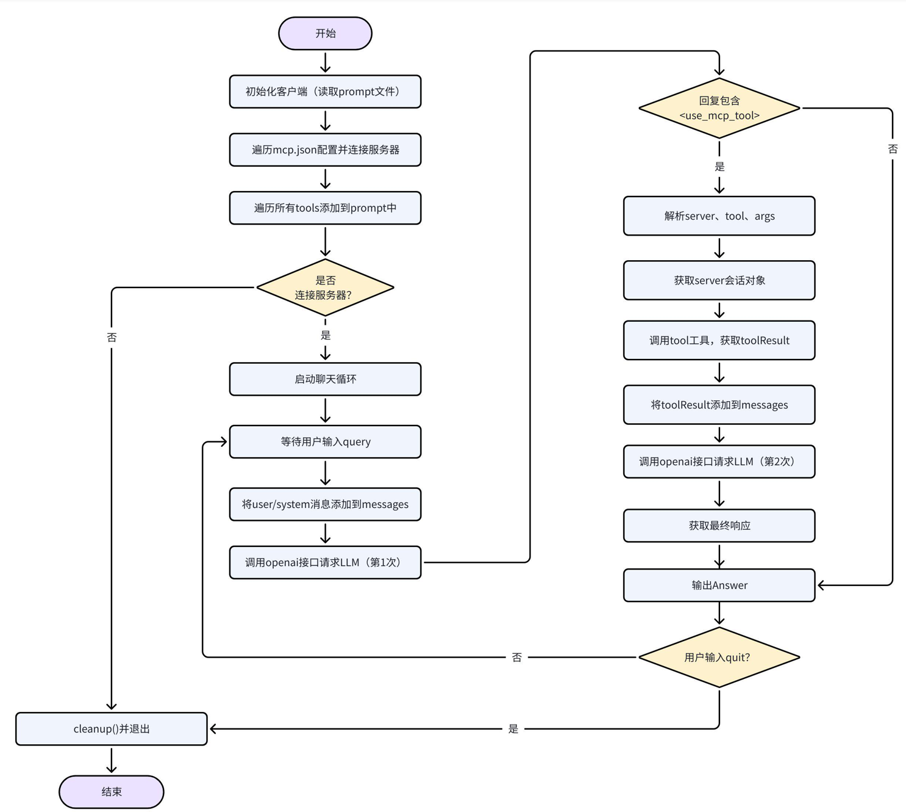
1 2 3 4 5 6 7 8 9 10 11 12 13 14 15 16 17 18 19 20 21 22 23 24 25 26 27 28 29 30 31 32 33 34 35 36 37 38 39 40 41 42 43 44 45 46 47 48 49 50 51 52 53 54 55 56 57 58 59 60 61 62 63 64 65 66 67 68 69 70 71 72 73 74 75 76 77 78 79 80 81 82 83 84 85 86 87 88 89 90 91 92 93 94 95 96 97 98 99 100 101 102 103 104 105 106 107 108 109 110 111 112 113 114 115 116 117 118 119 120 121 122 123 124 125 126 127 128 129 130 131 132 133 134 135 136 137 138 139 140 141 142 143 144 145 146 147 148 149 150 151 152 153 154 155 156 157 158 159 160 161 162 163 164 165 166 167 168 169 170 171 172 173 174 175 176 177 178 179 180 181 182 183 184 185 186 187 188 189 190 191 192 193 194 195 196 197 198 199 200 201 202 203 204 205 206 207 208 209 210 211 212 213 214 215 216 217 218 219 220 221 222 223 224 225 226 227 228 229 230 231 232 233 234 235 236 237 238 239 240 241 242 243 244 245 246 247 248 249 250 251 252 253 254 255 256 257 258 259 260 261 262 263 264 265 266 267 268 269 270 271 272 273 274 275 276 277 278 279 280 281 282 283 284 285 286 287 288 289 290 291 292 293 294 295 296 297 298 299 300 301 302 303 304 305 306 307 308 309 310 311 312 313 314 315 316 317 318 319 320 321 322 323 324 325 326 327 328 329 330 331 332 333 334 335 336 337 338 339 340 341 342 343 344 345 346 347 348 349 350 351 352 353 354 355 356 357 358 359 360 361 362 363 364 365 366 367 368 369 370 371 372 373 374 375 376 377 378 379 380 381 382 383 384 385 386 387 388 389 390 391 392 393 394 395 396 397 398 399 400 401 402 403 404 405 406 407 408 409 410 411 412 413 414 415 416 417 418 419 420 421 422 423 424 425 426 427 428 429 430 431 432 433 434 435 436 437 438 439 import { Client } from "@modelcontextprotocol/sdk/client/index.js" ;import { StdioClientTransport , StdioServerParameters } from "@modelcontextprotocol/sdk/client/stdio.js" ;import { SSEClientTransport } from "@modelcontextprotocol/sdk/client/sse.js" ;import OpenAI from "openai" ;import { Tool } from "@modelcontextprotocol/sdk/types.js" ;import { ChatCompletionMessageParam } from "openai/resources/chat/completions.js" ;import readline from 'readline/promises' ;import { homedir } from 'os' ;import path from 'path' ;import fs from 'fs/promises' ;import process from 'process' ;import dotenv from "dotenv" ;dotenv.config (); const API_KEY = process.env .API_KEY ;const MODEL = process.env .MODEL ;const BASE_URL = process.env .BASE_URL ;if (!API_KEY || !MODEL || !BASE_URL ) { throw new Error ("MODEL environment variable is required" ); } interface McpConfig { mcpServers ?: { [key : string ]: { isActive ?: boolean ; name ?: string ; type : 'stdio' | 'sse' ; command ?: string ; args ?: string []; env ?: { [key : string ]: string }; url ?: string ; }; }; } export class McpClient { private sessions : Map <string , Client > = new Map (); private transports : Map <string , StdioClientTransport | SSEClientTransport > = new Map (); private openai : OpenAI ; private systemPrompt : string = '' ; private messages : ChatCompletionMessageParam [] = []; private promptFilePath = path.join (process.cwd (), 'mcp_prompt.txt' ); constructor ( this .openai = new OpenAI ({ apiKey : API_KEY , baseURL : BASE_URL , }); } async initialize (): Promise <void > { try { const resolvedPromptPath = path.resolve (this .promptFilePath ); this .systemPrompt = await fs.readFile (resolvedPromptPath, 'utf-8' ); console .log (`Successfully loaded system prompt from ${resolvedPromptPath} \n` ); } catch (error) { console .error (`Error reading prompt file ${this .promptFilePath} :` , error); this .systemPrompt = 'You are an AI assistant. Respond to user queries.' ; console .warn ('Using a default system prompt due to file read error.' ); } } async loadConfigAndConnectServers (mcpJsonFile : string = './mcp.json' ): Promise <void > { let mcpConfig : McpConfig = {}; try { const filePath = path.resolve (mcpJsonFile); const fileContent = await fs.readFile (filePath, 'utf-8' ); mcpConfig = JSON .parse (fileContent) as McpConfig ; } catch (error) { console .error (`Error reading or parsing MCP config file ${mcpJsonFile} :` , error); throw new Error (`Failed to load MCP config: ${error instanceof Error ? error.message : String (error)} ` ); } const serversConfig = mcpConfig.mcpServers || {}; let connectedCount = 0 ; for (const k in serversConfig) { if (Object .prototype hasOwnProperty .call (serversConfig, k)) { const v = serversConfig[k]; console .log ('-' .repeat (50 )); if (v.isActive === false ) { console .log (`Skipping inactive server: ${k} ` ); continue ; } const mcpName = v.name || k; const mcpType = v.type ?.toLowerCase (); try { let transport : StdioClientTransport | SSEClientTransport ; if (mcpType === 'stdio' ) { const command = v.command ; const args = v.args || []; const env = v.env || {}; if (!command) { throw new Error (`${mcpName} command is empty.` ); } transport = await this .createCommandTransport (command, args, env); } else if (mcpType === 'sse' ) { const serverUrl = v.url ; if (!serverUrl) { throw new Error (`${mcpName} server_url is empty.` ); } transport = await this .createSSETransport (serverUrl); } else { throw new Error (`${mcpName} mcp type must be 'stdio' or 'sse'.` ); } const client = new Client ( { name : "mcp-client" , version : "1.0.0" }, { capabilities : { prompts : {}, resources : {}, tools : {} } } ); await client.connect (transport); this .sessions .set (mcpName, client); this .transports .set (mcpName, transport); const response = await client.listTools (); const availableTools = response.tools .map ((tool : Tool `##${mcpName} \n### Available Tools\n- ${tool.name} \n${tool.description} \n${JSON .stringify(tool.inputSchema)} ` ); this .systemPrompt = this .systemPrompt .replace ('<$MCP_INFO$>' , availableTools.join ('\n' ) + '\n<$MCP_INFO$>' ); console .log (`Successfully connected to ${mcpName} server with tools:` , response.tools .map ((tool : Tool tool.name )); connectedCount++; } catch (e) { console .error (`Error connecting to ${mcpName} : ${e instanceof Error ? e.message : String (e)} ` ); } } } this .systemPrompt = this .systemPrompt .replace (/<\$MCP_INFO\$>/g , '' ); if (connectedCount === 0 ) { console .warn ("No active MCP sessions established based on config." ); throw new Error ("Failed to connect to any active server based on config" ); } } private async createCommandTransport (command : string , args : string [], env : Record <string , string >): Promise <StdioClientTransport > { if (!command) { throw new Error ("Command is empty" ); } const processedArgs = args.map (arg => if (arg.startsWith ('~/' )) { return arg.replace ('~' , homedir ()); } return arg; }); const processedEnv = Object .fromEntries ( Object .entries (env).filter (([_, v] ) => v !== undefined ) ) as Record <string , string >; const serverParams : StdioServerParameters = { command, args : processedArgs, env : processedEnv }; return new StdioClientTransport (serverParams); } private async createSSETransport (url : string ): Promise <SSEClientTransport > { return new SSEClientTransport (new URL (url)); } parseToolString (toolString : string ): [string , string , any ] { const fullMatch = toolString.match (/<use_mcp_tool>([\s\S]*?)<\/use_mcp_tool>/ ); if (!fullMatch || !fullMatch[1 ]) { const fallbackMatch = toolString.match (/<use_mcp_tool>([\s\S]*?)<\/use_mcp_tool>/ s); if (!fallbackMatch || !fallbackMatch[1 ]) { throw new Error ('未找到 <use_mcp_tool> 标签或标签为空' ); } toolString = fallbackMatch[1 ]; } else { toolString = fullMatch[1 ]; } const serverNameMatch = toolString.match (/<server_name>([\s\S]*?)<\/server_name>/ ); const toolNameMatch = toolString.match (/<tool_name>([\s\S]*?)<\/tool_name>/ ); const argsMatch = toolString.match (/<arguments>([\s\S]*?)<\/arguments>/ ); if (!serverNameMatch || !toolNameMatch || !argsMatch) { throw new Error (' <use_mcp_tool> 中缺少 server_name, tool_name 或 arguments 标签' ); } const serverName = serverNameMatch[1 ].trim (); const toolName = toolNameMatch[1 ].trim (); let toolArgs; try { toolArgs = JSON .parse (argsMatch[1 ].trim () || '{}' ); } catch (e) { throw new Error ('工具参数无效: ' + (e instanceof Error ? e.message : String (e))); } if (!serverName || !toolName) { throw new Error (' server_name 或 tool_name 内容缺失' ); } return [serverName, toolName, toolArgs]; } processQuery = async (query : string ): Promise <string | null > => { this .messages .push ( { role : 'system' , content : this .systemPrompt } ); this .messages .push ( { role : 'user' , content : query } ); const completion = await this .openai .chat .completions .create ({ model : MODEL as string , messages : this .messages , max_tokens : 1024 , }); let currentResponse = completion.choices [0 ].message .content ; if (currentResponse && currentResponse.includes ('<use_mcp_tool>' )) { try { this .messages .push ({ role : 'assistant' , content : currentResponse }); const [serverName, toolName, toolArgs] = this .parseToolString (currentResponse); console .log (`[Calling tool ${toolName} with args ${JSON .stringify(toolArgs)} ]` ); console .log ('-' .repeat (40 )); console .log ("Server:" , serverName); console .log ("Tool:" , toolName); console .log ("Args:" , JSON .stringify (toolArgs)); console .log ('-' .repeat (40 )); const session = this .sessions .get (serverName); if (!session) { const errorContent = `[错误: 服务器 ${serverName} 未连接或找不到工具 ${toolName} ]` ; console .error (errorContent); this .messages .push ({ role : 'user' , content : `[工具 ${toolName} 返回错误: ${errorContent} ]` }); } else { const toolResult = await session.callTool ({ name : toolName, arguments : toolArgs }); const toolResultText = toolResult.content ? JSON .stringify (toolResult.content ) : '无内容' ; console .log ("Result:" , toolResultText); console .log ('-' .repeat (40 )); this .messages .push ({ role : 'user' , content : `[Tool ${toolName} returned: ${toolResultText} ]` }); } const secondCompletion = await this .openai .chat .completions .create ({ model : MODEL as string , messages : this .messages , max_tokens : 1024 , }); currentResponse = secondCompletion.choices [0 ].message .content ; } catch (error) { console .error ('处理工具调用出错:' , error); this .messages .push ({ role : 'user' , content : `[工具调用失败: ${error instanceof Error ? error.message : String (error)} ]` }); const secondCompletion = await this .openai .chat .completions .create ({ model : MODEL as string , messages : this .messages , max_tokens : 1024 , }); currentResponse = secondCompletion.choices [0 ].message .content ; } } return currentResponse; }; chatLoop = async () => { console .log ('\nMCP Client Started!' ); console .log ("Type your queries or 'quit' to exit." ); const rl = readline.createInterface ({ input : process.stdin , output : process.stdout , }); try { this .messages = []; while (true ) { const query = await rl.question ('\nQuery: ' ); if (query.toLowerCase () === 'quit' ) { rl.close (); break ; } if (query.trim () === '' ) { console .log ("Please enter a query." ); continue ; } const response = await this .processQuery (query); console .log ('Answer:' , response); } } catch (error) { console .error ('\nError:' , error); } finally { rl.close (); } }; cleanup = async (): Promise <void > => { console .log ("\nInitiating cleanup..." ); for (const transport of this .transports .values ()) { try { await transport.close (); console .log ("Closed transport." ); } catch (error) { console .error ("Error closing transport:" , error); } } this .transports .clear (); this .sessions .clear (); console .log ("Cleanup complete." ); }; hasActiveSessions (): boolean { return this .sessions .size > 0 ; } } async function main ( const client = new McpClient (); const mcpConfigFile = path.join (process.cwd (), 'mcp.json' ); try { await client.initialize (); await client.loadConfigAndConnectServers (mcpConfigFile); if (!client.hasActiveSessions ()) { console .error ("未建立任何活动的 MCP 会话。正在退出。" ); await client.cleanup (); process.exit (1 ); } await client.chatLoop (); } catch (error) { console .error ('初始化、配置加载或运行时错误:' , error); await client.cleanup (); process.exit (1 ); } finally { await client.cleanup (); process.exit (0 ); } } main ().catch (console .error );
调试MCP Client
运行 npm run build 进行编译，然后node启动我们搭建的MCP Client，效果如图：
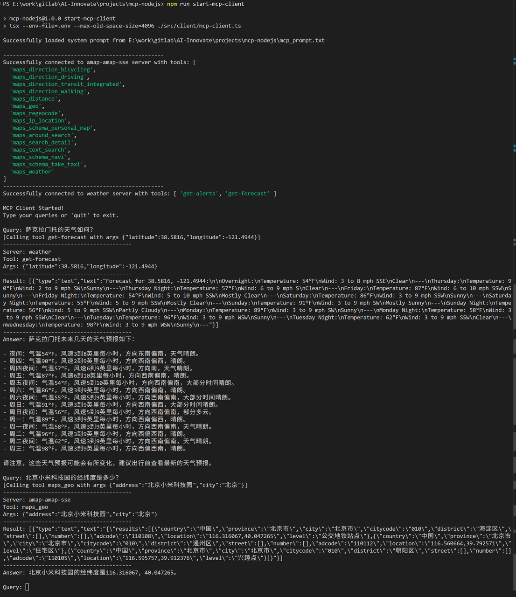
MCP Client的搭建，通过加载mcp.json配置文件，即可加载所有的MCP Server，通过验证所有的MCP Server都可以加载成功！

 微信
微信 支付宝
支付宝